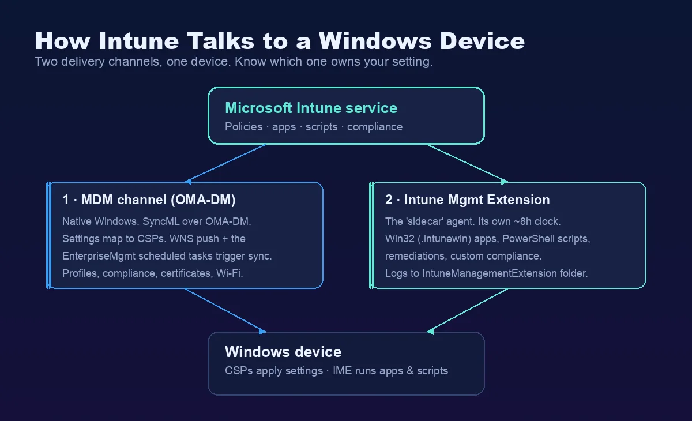
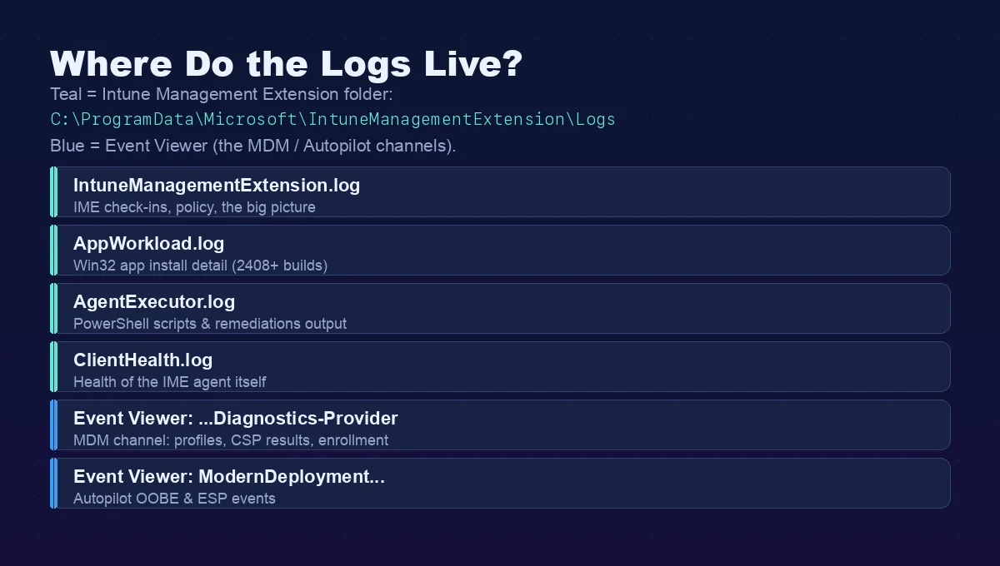

Intune management channels: MDM, IME and MMP-C
This reference explains the Windows components behind Intune management. For the step-by-step fault isolation and common error codes, use the Intune troubleshooting workflow.
The detailed internals include community research by Rudy Ooms, Oliver Kieselbach and Michael Niehaus. Verify behavior against your Windows build; distinguish the linked community findings from Microsoft documentation.
Intune troubleshooting starts here: how Intune actually works under the hood
Windows uses two management channels. Identify which owns the setting before selecting a log.

Channel 1 â the native MDM channel. This is built into Windows. Intune talks to the device using the OMA-DM protocol, and the messages are SyncML (XML). The device does not get raw registry keys. Instead, every setting maps to a Configuration Service Provider (CSP) â a small interface in Windows that knows how to apply that one setting. Profiles, compliance, certificates and Wi-Fi all come down this channel.
Channel 2 â the Intune Management Extension (IME). This is a real agent (the old name was the âSidecarâ agent). It is installed automatically the first time you assign a Win32 app, a PowerShell script, a remediation or a custom compliance script. It does the things the native MDM channel cannot. It has its own service (IntuneManagementExtension) and its own clock, independent from the MDM check-in.
Note: This is the single most useful Intune troubleshooting habit to internalise. If a configuration profile is broken, you look at the MDM channel and Event Viewer. If a Win32 app or a script is broken, you look at the IME and its logs. Two problems, two places.
How do CSPs really work?
A CSP maps the SyncML command from Intune to a Windows setting through an OMA-URI (LocURI), for example:
./Device/Vendor/MSFT/Policy/Config/<Area>/<PolicyName>For Intune troubleshooting, the very first part decides the scope: ./Device for a device setting, ./User for a user setting. If there is no prefix, Windows treats it as device-targeted by default.
The Policy CSP is the workhorse for most settings, and it has one detail that helps enormously when troubleshooting: it has a Config path (read/write â where Intune sets the value) and a Result path (read-only â where you read the conflict-resolved value the device actually applied). So when two sources fight over a setting, the Result path tells you who won.
When Intune sends a Settings Catalog profile, each setting becomes a SyncML command â usually a Replace (set a value), an Add (create a node) or a Delete (remove it). âNot configuredâ is literally a Delete. Microsoft recommends wrapping each setting in an Atomic block so it is applied as a single transaction. The on-the-wire command looks like this:
<Replace> <CmdID>2</CmdID> <Item> <Meta><Format>chr</Format><Type>text/plain</Type></Meta> <Target><LocURI>./Device/Vendor/MSFT/Policy/Config/AppVirtualization/AllowAppVClient</LocURI></Target> <Data><Enabled/></Data> </Item></Replace>Hint: You can watch these commands live with Oliver Kieselbachâs SyncML Viewer. It traces the MDM session and shows you the exact XML the client sent and received. It is the fastest way to prove whether a setting was actually delivered or silently dropped.
How often does a device check in?
Microsoft states the maintenance check-in happens about every 8 hours, and the IME also checks in on its own schedule. But you rarely wait that long. When you assign something or hit Sync, Intune sends a Windows Push Notification Service (WNS) notification that triggers a near-immediate check-in. So the famous â8-hour syncâ is misleading â targeted changes push almost right away, which is the first thing I confirm in any Intune troubleshooting case before I assume something is broken.
For Intune troubleshooting, the trigger on the device is a set of scheduled tasks created at enrollment under Task Scheduler Library > Microsoft > Windows > EnterpriseMgmt > \{EnrollmentGUID\}. The key one is PushLaunch, which reacts to the WNS push and starts an OMA-DM session.
Hint: A LastTaskResult of 0x82AC0204 on the PushLaunch task is not an error. It just means âqueued, will run later.â I have seen people chase that for an hour.
MMP-C and Declared Configuration: the second brain Intune troubleshooting now has to cover
Here is the part that surprises most admins, and increasingly trips up Intune troubleshooting: on a modern, fully patched Windows device, there is now a second enrollment running quietly next to the classic one. If you have not heard of MMP-C yet, you will â it is already on your devices.

MMP-C stands for Microsoft Management Platform â Cloud. It is a new cloud management plane that runs alongside â not instead of â the classic Intune/OMA-DM channel. It exists to carry Windows Declared Configuration (WinDC), a new way of delivering policy.
The difference between the two models is the whole point:
- The classic OMA-DM channel is imperative. The server issues commands one at a time â get, set, get â and only checks the result at the next sync. If the setting drifts in between, nothing happens until the device checks in again.
- Declared Configuration is declarative and idempotent (think Windows DSC). The server sends the whole desired state in one batch per scenario, the client validates it synchronously, and the device itself owns keeping it that way. If a setting drifts, the device re-applies it on its own â non-destructively. This is the same desired-state idea Apple uses for declarative device management.
Microsoft says plainly that WinDC requires a separate OMA-DM enrollment that depends on the device already being enrolled in a primary MDM server. So a managed device now has two enrollments: the classic one (the âMS DM Serverâ, using *.manage.microsoft.com) and a linked second one for Declared Configuration (using the *.dm.microsoft.com endpoints).
What triggers it, and what runs on it?
The linked enrollment first showed up with Endpoint Privilege Management (EPM), which is still the flagship workload. But the big change is Windows Advanced Device Inventory (the Properties Catalog) â because that feature runs on MMP-C, the dual enrollment is now rolling out to effectively all managed devices, without you doing anything. Resource access policies (Wi-Fi, VPN and certificates) are moving over too.
Microsoft has signalled that security baselines, Defender settings and Account Protection are on the same pipeline â but as of writing none of those are confirmed generally available on the Declared Configuration channel, so I treat them as âcoming, not here.â That distinction matters for Intune troubleshooting: if a baseline misbehaves today, it is still travelling down the classic OMA-DM channel, not WinDC. This is the direction of travel for Windows management, but read the channel before you read the log.
Note: The acronym, the enrollment âtypeâ numbers, the *.dm.microsoft.com host names and the 4-hour cadence below were reverse-engineered by Rudy Ooms (call4cloud), not published by Microsoft. The desired-state model, the dedicated enrollment requirement and the refresh interval are documented. I am separating the two so you know what to trust.
How does it work, and how do I see it on a device?
The second enrollment is set up through new LinkedEnrollment nodes on the DMClient CSP â you set a DiscoveryEndpoint, then Exec an Enroll. On the device the linked OMA-DM enrollment is named MicrosoftManagementPlatformCloud, so that string in the registry or in a log is your confirmation that MMP-C is live. The engine that processes Declared Configuration documents runs as the Windows service dcsvc (backed by dcsvc.dll), and a scheduled task runs deviceenroller.exe /DeclaredConfigurationRefresh to reconcile drift â by default about every 4 hours (the classic MDM channel is every 8). The refresh interval is configurable via DeclaredConfiguration/ManagementServiceConfiguration/RefreshInterval. So MMP-C is not only a different model, it also checks in twice as often.
The first Intune troubleshooting step for MMP-C is to confirm it on a device by opening the registry:
HKLM\SOFTWARE\Microsoft\EnrollmentsYou will now see two enrollment GUIDs. Under the classic Intune enrollment there is a LinkedEnrollment subkey with values like EnrollStatus, LastError and MMPCLocked. The second GUID is the MMP-C enrollment itself, with its own folder under EnterpriseMgmt in Task Scheduler.
Hint: Declared Configuration does not get its own Event Viewer log. Its events ride inside the normal DeviceManagement-Enterprise-Diagnostics-Provider channels â look for lines that say MDM Declared Configuration: or Provider Name: (DeclaredConfiguration). I will come back to the MMP-C errors I see most later in the guide.
Identity and Intune troubleshooting: how a device proves who it is
A huge share of âIntune is brokenâ tickets are really identity problems, so identity is where a lot of Intune troubleshooting actually ends â the device cannot prove who it is, so sync, enrollment or Conditional Access fails. So it is worth understanding the identity layer. Your first command, always, is:
dsregcmd /statusRead three sections (Microsoft documents every field in the dsregcmd troubleshooting reference):
- Device State â the first thing I check in identity Intune troubleshooting:
AzureAdJoined,DomainJoined,EnterpriseJoined. The combination tells you the join type.AzureAdJoined: YESalone is cloud-native (Entra joined);YES+DomainJoined: YESis hybrid. (Entra registered shows up lower, asWorkplaceJoinedin the User State.) - Device Details â the device certificate thumbprint, and
TpmProtected: YES(the private key lives in the TPM). - SSO State â
AzureAdPrt: YES/NO,AzureAdPrtUpdateTime(if it is more than ~4 hours old, the PRT is failing to refresh) andAcquirePrtDiagnostics. This is the Primary Refresh Token, and it matters more than people think. Tip: locking and unlocking the device forces a PRT refresh attempt â one of the fastest Intune troubleshooting moves there is.
The two certificates you must not confuse
A managed, Entra-joined device has two certificates that do very different jobs, and mixing them up wastes hours:
- MS-Organization-Access â this is the device identity for Entra. It is issued when the device registers, lasts about 10 years, and its presence is the Azure AD join. This certificate is what gets the device a PRT. Remove it and the device is effectively unjoined.
- Microsoft Intune MDM Device CA â this authenticates the OMA-DM management channel to Intune. This is the certificate that breaks when sync dies with
0x80190190.
They fail independently, and confusing the two is one of the most common Intune troubleshooting mistakes. A device can be perfectly Entra-joined with a healthy PRT and still have an expired MDM certificate that blocks all sync. (The pairing of these two certs and their OID details is documented best by Rudy Ooms; the Entra device-identity half is also in Microsoftâs own device FAQ.)
What is the PRT, and why does it break things?
The Primary Refresh Token (PRT) is the key artifact behind single sign-on, and a recurring root cause in Intune troubleshooting. Microsoft describes it as an opaque blob issued to the token brokers on the device. The important part for troubleshooting is how it is protected:
- At registration the device generates a device key and a transport key, both bound to the TPM.
- Entra issues the PRT plus a session key that is encrypted to the transport key â so only that deviceâs TPM can decrypt it. That session key is then used to sign every later token request.
- CloudAP (the Cloud Authentication Provider, loaded into LSASS) caches and renews the PRT every 4 hours. That is exactly what
AzureAdPrtUpdateTimereflects.
So when the TPM has a problem, or the device object is deleted or disabled, the PRT cannot refresh â and because device-compliance claims for Conditional Access ride inside the PRT, a broken PRT can cascade into sign-in prompts, CA blocks and sync failures all at once. To dig in, read the SSO State in dsregcmd /status, then Event Viewer under Microsoft > Windows > AAD > Operational (the PRT flow is bracketed by event 1006 start and 1007 end).
Note: Microsoft says explicitly not to use Fiddler to capture PRT traffic â use netsh trace instead. Fiddler is great for the OMA-DM channel (more on that below), but it breaks the PRT flow.
Where the logs live: the Intune troubleshooting log map
Once you know the channels and the identity layer, the log locations make sense. Here is the map I keep in my head.

Before the long-form notes, here is the quick reference I keep pinned. When someone asks âwhere are Intune logs stored on Windows?â, this table is the answer. Everything for apps and scripts lives under C:\\ProgramData\\Microsoft\\IntuneManagementExtension\\Logs\\ and is best read with CMTrace.
| Log file | What it is for |
|---|---|
IntuneManagementExtension.log | Main IME log: check-ins, policy requests, processing and reporting â the big picture. |
AppWorkload.log | Win32 app deployment and install detail (primary log for Win32 apps on current builds). |
AppActionProcessor.log | Detection and applicability (requirement) checks. |
AgentExecutor.log | PowerShell platform-script and remediation execution, with the output. |
HealthScripts.log | Remediations (proactive remediation) run detail. |
Win32AppInventory.log | Win32 app inventory collector. |
Sensor.log | Endpoint Analytics data collector. |
ClientHealth.log | Health of the IME agent itself. |
The Intune troubleshooting log map â all under the IntuneManagementExtension\Logs folder.
For apps and scripts (the IME): everything is in
C:\ProgramData\Microsoft\IntuneManagementExtension\Logs.
- IntuneManagementExtension.log â the main log. IME check-ins, policy requests, the big picture.
- AppWorkload.log â Win32 app install detail. On newer builds (service release 2408 and later) this is where the real app detail moved, so check both this and the main log.
- AgentExecutor.log â the actual PowerShell script and remediation execution, with the output.
- ClientHealth.log â the health of the IME agent itself.
For profiles, CSPs and enrollment (the MDM channel): open Event Viewer and go to
Applications and Services Logs > Microsoft > Windows > DeviceManagement-Enterprise-Diagnostics-Provider > Admin.
Turn on the Debug channel (View > Show Analytic and Debug Logs) when you need more detail. Some event IDs worth knowing here:
- 75 = enrollment success, 76 = enrollment failure (with the
0x8018xxxxcode). - 208 / 813 / 814 = OMA-DM session and policy applied.
- 809 = a policy failed with an âUnknown Win32 error codeâ â a frequent Intune troubleshooting clue â the line usually prints the decoded error right there.
For Autopilot: Applications and Services Logs > Microsoft > Windows > ModernDeployment-Diagnostics-Provider > Autopilot.
How do I read an IME log like an expert?
Reading IntuneManagementExtension.log raw is painful â it is full of GUIDs, and that friction is where a lot of Intune troubleshooting stalls. Here is how the people who do this all day actually work:
- Turn GUIDs into names first. Use Petri Paavolaâs Get-IntuneManagementExtensionDiagnostics with
-ConvertAllKnownGuidsToClearText. It turns the log into a readable timeline of every app, script and ESP phase, with the GUIDs replaced by real names. It honestly makes the log a thousand times easier to read. - Know the lifecycle markers to search for. For Win32 apps, grep for
[Win32App], and especiallyGRSManagerandReevaluationScheduleManagerâ those tell you about the retry cooldown (more on that below). A line saying an app âis not expiredâ means it is still in its cooldown window. - Open it in a proper viewer. Use CMTrace or, on any machine without ConfigMgr, cmtrace.dev â the free browser version Florian Salzmann and I built. It colours errors red, follows the file live, and has a built-in error-code lookup.
Hint: With verbose IME logging enabled, the log even contains the download URL, AES key and IV needed to decrypt the .intunewin package â Oliver Kieselbach documented this. Useful, but it writes secrets to disk, so turn verbose logging back off and clean up afterwards.
I always start my Intune troubleshooting with what is already on the device or in the portal, and only then reach for community tools. Here is my toolbox.

This ships with Windows and is my go-to first-line Intune troubleshooting collector. It gathers the logs, registry exports and event logs into one package, plus an HTML summary:
:: Collect enrollment, provisioning and Autopilot data into one zipMdmDiagnosticsTool.exe -area "DeviceEnrollment;DeviceProvisioning;Autopilot" -zip "C:\Temp\MDMDiag.zip"Save the output to a folder you can write to (like C:\Temp). This is also what the portalâs Collect diagnostics action runs under the hood.
Collect diagnostics â the same thing, remotely
For remote Intune troubleshooting, open a Windows device in the admin center and click Collect diagnostics. It pulls the full log set without bothering the user, and you can run it on up to 25 devices at once. The collection stays for 28 days. This is my first move when the device is not in front of me.
- IntuneDeviceTroubleshooter â a tool I built. It pulls a deviceâs compliance, configuration and app state from Microsoft Graph into a single pane, so you do not have to click through five blades to see why a device is unhappy. It also does one-click actions like sync and restart.
- Error Hunter â my free MSNugget lookup for Intune and Windows error codes: 350+ codes with meaning, cause, fix and a Microsoft Learn link, all client-side.
- Get-IntuneManagementExtensionDiagnostics by Petri Paavola â the IME log timeline tool I mentioned above. Essential.
- Intune Debug Toolkit from MSEndpointMgr â a Windows GUI with a Win32 app redeploy button, a SyncML viewer, a registry change monitor and bundled CMTrace. Many of us in the community contributed to it.
- SyncML Viewer by Oliver Kieselbach â live OMA-DM protocol tracing, and newer versions can even trigger an MMP-C sync and decode an Autopilot hardware hash.
- For Autopilot specifically:
Get-AutopilotDiagnostics(Michael Niehaus) builds a clean OOBE/ESP timeline, andOA3Tool.exefrom the Windows ADK decodes a hardware hash (it is not a hash at all â it is a base64 list of hardware attributes).
Hint: For quick, focused tips I also write short ânuggetsâ with Florian over at MSNugget, and the people who taught me most of the internals in this post are worth following directly: Rudy Ooms, Oliver Kieselbach and Michael Niehaus.
How does a Win32 app really reach the device?
Win32 apps cause more Intune troubleshooting than anything else, so it pays to know exactly what happens. Here is the full journey of an .intunewin file. If you want even more on the agent that drives this, I wrote a separate deep dive: Intune Management Extension Deep Dive: How IME Works.

The .intunewin is just a ZIP that has been encrypted. The Content Prep Tool encrypts your payload with AES-256 in CBC mode, and stores the keys in Detection.xml inside the package (the EncryptionKey, the MacKey, the InitializationVector and a MAC). The encrypted .bin has a fixed layout: the first 32 bytes are an HMAC, the next 16 bytes are the IV, and the rest is the ciphertext â so a decoder literally skips the first 48 bytes before decrypting. Oliver Kieselbach and Stephan van Rooij reverse-engineered all of this; Microsoft only documents that it is encrypted, not how.
Note: The keys are not shipped to the client inside the package â the IME receives them from the Intune service by policy when it requests the app. That is why you cannot just unzip a .intunewin and read it.
For Intune troubleshooting, this is the chain to picture: on the device the IME downloads the .bin to Content\Incoming, verifies the hash, decrypts it, and unpacks the result to C:\Windows\IMECache\<AppId>. Then it runs your install command and captures the exit code. After the install, it re-runs the detection rule to confirm the app is there.
This is where the two classic failures live â and Microsoftâs app install error codes reference is the canonical list to keep alongside this section:
- âInstalled but reported as failedâ (
0x87D1041C) â the installer returned success, but the detection rule did not find the app afterwards. Almost always the detection rule is wrong: wrong path, wrong version, wrong registry value, or a mismatched MSI product code. - The IME cleans the
IMECachefolder a few seconds after detection. If your installer is a wrapper that calls files from that folder after the detection result, it fails with a âsource not foundâ error. Fix it by zipping all your files and expanding them yourself first.
The retry trap: GRS
Here is the one that catches everyone. After a failed install, the IME does not keep trying every check-in. It retries a failed app three times at five-minute intervals, then locks it into the Global Retry Schedule (GRS) â a roughly 24-hour cooldown during which it skips the app on every sync. So when you fix the detection rule and nothing happens, the app is not broken â it is just in its cooldown. Knowing this single fact prevents more wasted Intune troubleshooting time than almost anything else in this guide.
To force an immediate retry on a test device, you clear the IMEâs state and restart the service:
# Force the IME to re-evaluate Win32 apps on a TEST device.
Stop-Service -Name IntuneManagementExtension
Remove-Item "HKLM:\SOFTWARE\Microsoft\IntuneManagementExtension\Win32Apps\*" -Recurse -Force -ErrorAction SilentlyContinue
Start-Service -Name IntuneManagementExtension
# Watch C:\ProgramData\Microsoft\IntuneManagementExtension\Logs\AppWorkload.logNote: The app state lives under HKLM\SOFTWARE\Microsoft\IntuneManagementExtension\Win32Apps\<SID>\<AppGUID> â the SID is S-0-0-00... for a device-targeted app, or the real user SID for a user-targeted one. The retry cooldown itself is a separate GRS hash key under ...\Win32Apps\<SID>\GRS\<hash>. To properly clear the cooldown you delete both the <AppGUID> key and its matching GRS\<hash> key, then restart the IntuneManagementExtension service â which is why I just clear the whole Win32Apps branch in the script above and restart. GRS is community-documented (Rudy Ooms, MSEndpointMgr) and the exact layout shifts between versions, so do this on a test device, not in production. And remember: clearing GRS only resets the retry timer â it does not fix the underlying failure.
Win32 app return codes you must map correctly
The detection rule is the source of truth for âinstalled or failed,â but the installerâs exit code still has to be mapped correctly in the appâs return-code list, or a perfectly good install gets reported as a failure. This is the table I check whenever a Win32 app result looks wrong. Any code that is not in the return-code list is treated as Failed â the classic trap is a 3010 soft reboot that nobody mapped as success.
| Return code | Meaning in Intune |
|---|---|
0 | Success. |
1707 | Success (legacy installer success code). |
3010 | Soft reboot â success, reboot is batched (deferred until after the ESP). Must be mapped as success. |
1641 | Hard reboot â success, the IME reboots the device immediately. |
1618 | Retry â another installation is already running (TrustedInstaller is busy); the IME tries again later. |
Win32 app return codes and how Intune interprets them.